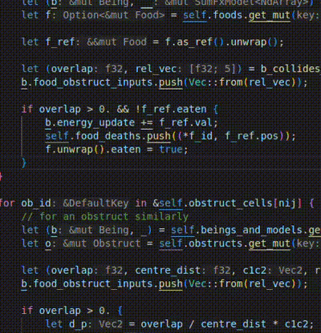

Welcome!
What is Samsarsa?
I wanted to see if Neural Networks could evolve a form of communication in a survival setting with no initial priming. In Samsarsa, tiny neural networks embody little creatures in an environment where they can see around them in a small radius, move around, eat food, build obstacles, bump into them and other creatures, and speak and hear. Explore the rest of this book for implementation details among other things.
Why "Samsarsa"?
Samsara is the endless cycle of death and rebirth in Buddhism, which felt apt given the repetitive death-rebirth cycle of genetic algorithms, and SARSA (State-Action-Reward; State-Action) is a very important classical algorithm in Reinforcement learning, and stuck out to me as cool when I was studying Sutton-Barto (I have future plans to also try and implement other RL algorithms).
Check out the project repository! But if you're reading this, you probably were led here from there to begin with.
I implemented the entire thing in Rust: the physics engine, the visual rendering of the entire environment, and the neural networks, and the genetic algorithm and all of its components, and, well, all the rest of it. It took me a long long time, because this project was my first venture into the Rust programming language, and I was in college for a large chunk of the time. I revived the project after my graduation after a long hiatus, putting the pieces back together and finishing a first working prototype.
You can navigate either using the sidebar or the buttons on the sides (or at the bottom if you're on mobile). I used a book-building tool called mdBook for this website, and some of my own code on top.